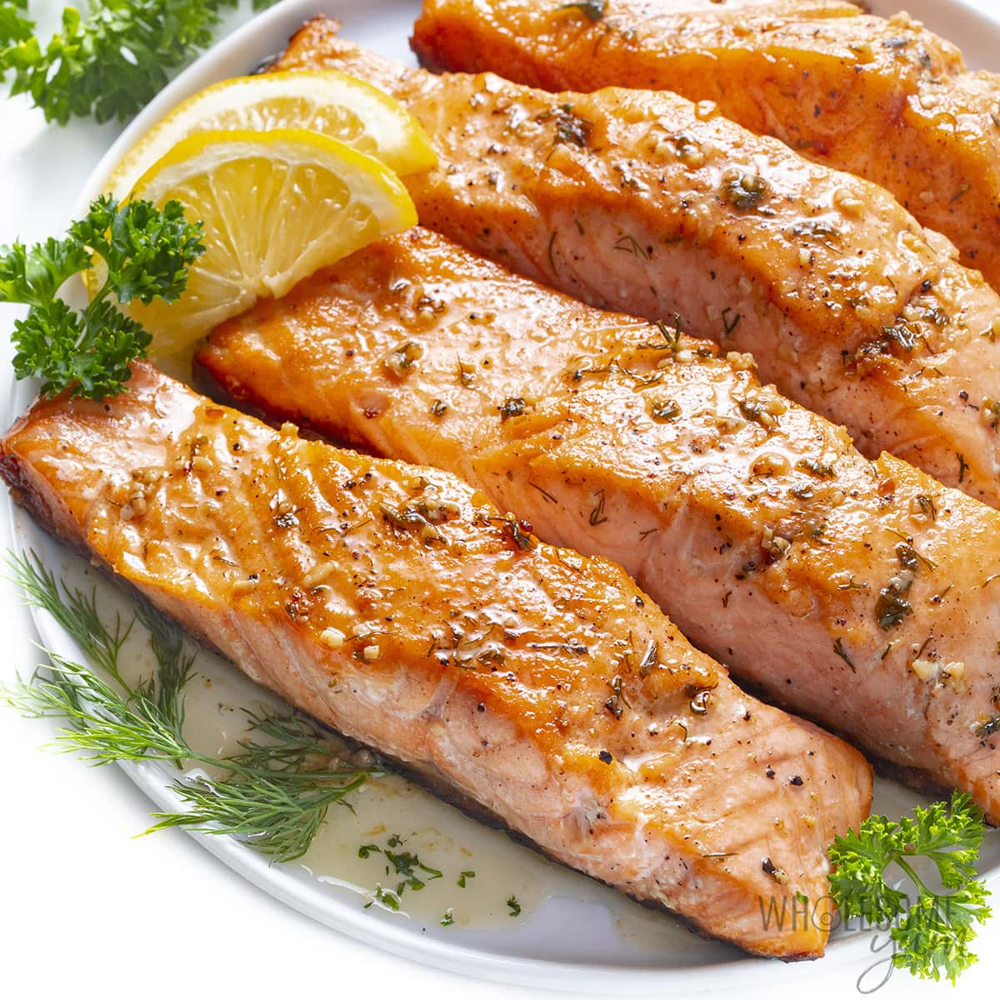

Home
Grilled Salmon

Description
This grilled salmon tastes so good! A simple soy sauce and brown sugar marinade,
with hints of lemon and garlic, are the perfect salty-sweet complement to rich salmon fillets.
Even my 9-year-old loves this recipe! Serve with a side of grilled
zucchini or grilled corn.
Ingredients
- 1.5 pounds salmon fillets
- Lemon pepper to taste
- Garlic powder to taste
- Salt to taste
- 1/3 cup soy sauce
- 1/3 cup water
- 1/4 cup vegetable oil
Directions
- Season salmon fillets with lemon pepper, garlic powder, and salt.
- Stir soy sauce, brown sugar, water, and vegetable oil together in a small bowl until sugar is dissolved. Place fish in a large resealable plastic bag; add soy sauce mixture, seal,
and turn to coat. Refrigerate for at least 2 hours.
- Preheat an outdoor grill for medium heat and lightly oil the grate.
- Place salmon on the preheated grill, and discard marinade. Cook salmon until fish flakes easily with a fork, about 6 to 8 minutes per side.